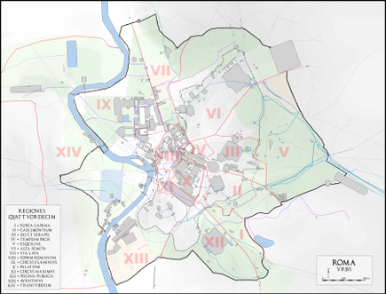
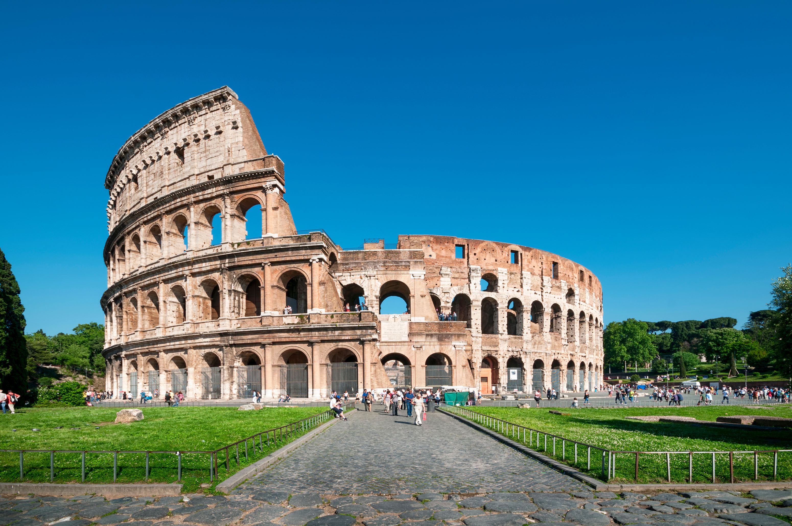
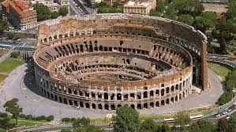

Le Colisée (Colosseo en italien), à l'origine amphithéâtre Flavien (amphitheatrum Flavium en latin), est un immense amphithéâtre ovoïde situé dans le centre de la ville de Rome, entre l'Esquilin et le Cælius, le plus grand jamais construit dans l'Empire romain. Il est l'une des plus grandes œuvres de l'architecture et de l'ingénierie (en) romaines.
Témoignage monumental de la propagande flavienne, sa construction, juste à l'est du Forum Romain, a commencé entre 70 et 72 apr. J.-C., sous l'empereur Vespasien, et s'est achevée en 80 sous Titus. D'autres modifications ont ensuite été apportées au cours du règne de Domitien (81-96)2. Le nom d'amphithéâtre Flavien dérive du nom de famille (gens Flavii) de l'empereur Vespasien et ses fils Titus et Domitien.
Pouvant accueillir probablement 50 000 spectateurs (les estimations plus anciennes de 80 000 spectateurs, soit un douzième de la population romaine, étant exagérées)3, le Colisée, témoin de l'évergétisme impérial, a été utilisé pour les venationes (combats d'animaux sauvages), les munera (combats de gladiateurs) et autres spectacles publics, tels que des exécutions de condamnés à mort, des reconstitutions de batailles célèbres et des drames basés sur la mythologie romaine. Il est resté en service pendant près de 500 ans, les derniers jeux se prolongeant jusqu'au VIe siècle. Pour l'inauguration du Colisée, en 80 apr. J.-C., Titus donne une naumachie dans le Colisée transformé en bassin reconstituant la bataille navale de Corinthe contre Corcyre. Le bâtiment a finalement cessé d'être utilisé au cours du haut Moyen Âge. Il a plus tard été réutilisé pour des usages variés tels que des habitations, des ateliers d'artisans, le siège d'un ordre religieux, une forteresse, une carrière et un sanctuaire catholique chrétien.


Le Colisée n'a pas toujours été appelé Colosseum.
L'empereur flavien Vespasien a commandé la construction du Colisée au centre de la Rome antique vers 70 de notre ère. Son fils Titus, plus tard empereur flavien, a inauguré l'arène en 80 de notre ère en organisant 100 jours de jeux de gladiateurs.
Quand Titus a ouvert l'arène, il l'a baptisée Ampitheatrum Flavium (l'amphithéâtre flavien) en l'honneur de la dynastie des Flaviens. Le nom "Colisée" n'a été associé à la structure que bien plus tard

Les combats de gladiateurs n'étaient pas les seules escarmouches organisées au Colisée.
Autrefois, il était possible de remplir l'arène d'environ un mètre d'eau, juste assez pour mettre en scène des simulacres de batailles navales élaborées qui étaient très populaires auprès des Romains de l'Antiquité.
La construction de l'arène dite Domitien-le réseau souterrain de passages utilisés pour abriter les gladiateurs, les esclaves, les animaux et les fournitures sous le sol de l'arène - a mis fin aux populaires batailles navales simulées. Le système a été nommé d'après le fils aîné de l'empereur Vespasien, Domitien, qui a régné en tant qu'empereur de 81 à 96 de notre ère, avant l'ouverture du Colisée.

Le Colisée a commencé à s'effondrer au 5e siècle.
Lorsque l'Empire romain a commencé à décliner au cours du Ve siècle, les spectateurs ont commencé à se désintéresser du Colisée. Il est finalement tombé dans l'oubli : Des parties importantes du Colisée se sont effondrées à la suite de catastrophes naturelles, comme des orages et des tremblements de terre, tandis que le vandalisme a fait sa part à son tour.
ColiséeCe n'est que bien après le XVIIIe siècle que l'Église catholique est intervenue dans sa préservation, plusieurs papes s'étant joints aux efforts de conservation.